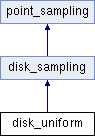

Point sampling of the unit disk following a uniform repartition. More...
#include <disk_uniform.h>
Inheritance diagram for disk_uniform:

Public Member Functions | |
| disk_uniform () | |
| Default constructor. | |
| disk_uniform (unsigned int n) | |
| Initialization constructor. | |
| virtual void | fill () override |
| Fill the sampling with points according to specific input parameters. More... | |
| void | set_n (unsigned int n) |
Set parameter n. | |
 Public Member Functions inherited from disk_sampling Public Member Functions inherited from disk_sampling | |
| void | fill_from_square_map (const square_sampling &ss) |
| Fill the sampling by mapping it from a square sampling. More... | |
| Public Member Functions inherited from point_sampling | |
| bun | to_ray_bundle (const Vec3 &direction) const |
| Convert to a ray bundle with a given direction. More... | |
| triangulation | triangulate () const |
| Triangulate the points into a mesh structure over points. More... | |
| void | plot () const |
| Plot the points in a window. | |
| void | scale (double factor) |
| Scale the sampling. More... | |
Private Member Functions | |
| virtual std::string | print_type () const override |
| Specialization-dependent string indicating the point sampling type. | |
Private Attributes | |
| unsigned int | n |
| The number of points on the side of the generating square grid. More... | |
Additional Inherited Members | |
| Public Attributes inherited from point_sampling | |
| std::vector< Vec2 > | points |
| Vector of 2D points storing the sampling. | |
Detailed Description
Point sampling of the unit disk following a uniform repartition.
It is generated thanks to a grid_square mapped onto the unit disk by disk_sampling::fill_from_square_map.
Member Function Documentation
◆ fill()
|
overridevirtual |
Fill the sampling with points according to specific input parameters.
This function is virtual and depends on which specialization is used.
Implements point_sampling.
Member Data Documentation
◆ n
|
private |
The number of points on the side of the generating square grid.
The total number of points in the sampling is n x n.
The documentation for this class was generated from the following files:
- src/disk_sampling/disk_uniform.h
- src/disk_sampling/disk_uniform.cpp